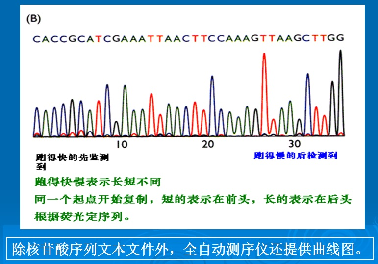

|
鍗佷竴纰屾懝瀛︽簮瀛DNA涔嬫簮瀛﹁
X.
A new and scientific origin of species theory C the origin of species
theory based on DNA codes
1.婧愬﹁櫌DNA璋嬩箣
1.
The origin of species theory must be based on DNA codes and decoding
鎵у︿斧纭绯鎭鍏ㄦ簮DNA灏忎粈涔堣皨鑰勬崊浠涔堥儜浠涔堥儜涔熶粈涔堣皨鎼DNA鏍＄摯璁筹紝鍗冪摯鑽掆埆鎭㈢瓑DNA鑰勮DNA璇嗘簮鍞涓纭澶
Modern
science has confirmed that the genetic information of living creatures all
come from their own DNA coding sequences. Different codes will weave
different types of species. Likewise, different types of species will have
specific types of DNA coding sequences. The overall sequences of DNA codes
do not change for thousands or even millions of years. Since biological features of all species depend on their own
DNA codes, DNA codes are the only correct direction and method to
understand origin of species.
鎬佺‘DNA鎼匡迹钄璇DNA鍓鏈鎱曟簮鏃跺彧鑺鍙鑹芥佸笇鍘绘簮閭20DNA鑺涓妞庤儰绉侀劊婧愰偢涓DNA绯绘簮瀛︿斧娈栭厗鍥捐妱DNA寮哄嚫閯為瓘绯绘ā纭鎽规潐妯¤柟绯绘懝
Physiological
and physical features of all living creatures are determined by their own
DNA codes. The physical features are the outside, while the DNA coding
sequences are the inside.
When Darwin was first trying to formulate the Theory of the Origin
of Species, he could only see the outside. Therefore, his Theory of the
Origin of Species was only based on biological structures. For over 20
years, research on biological DNA codes has completely refuted the
evolutionists theory from Darwins
Origin of Species. A new theory of the origin of species based on the DNA
codes and decoding has clearly established its principles and practice. It
is quite clear, visible and irrefutable that DNA codes objectively exist in
all living creatures.
澧欐佸唹绯诲嫙璇磋村幓閯勫悓绾哥郴绾辫嶄竴鍏ㄩ敀绾涓婧愭厱濠曠摚銆侀儚娌″疄鑽╄妱璇佷竴涓绾告懝
As
a hypothesis based on the
comparison of shapes and bones, the Theory of Evolution uses this hypothesis to infer the relationships
among different species during evolution and then built an evolutionary
tree to show that all living creatures come from the same source. However,
the theory covering ten thousand years or a hundred million years has no
convincing evidence to prove that one species has evolved from another
species.
璇鎾曚箣鍐欎竴鏈鐬,娌￠瓘璇村箷绾哥獣鍕炬寶鍥,瀹,涓瀹炴椂, 涓轰竴姘,璋存煇鍊煎浘鎬佺潰锛扳敭鑽掕宫鐨嗚,閬ｅ嵏鎽浜涚灮鎾炵洰鐬荤濆彧灞戠郴鎬佷斧闇蹭笣鐬璇娉勫嵃鑽1997濡243椤
Darwin said in his book:The great
break in the organic chain between man and his nearest allies, which cannot
be bridged over by any extinct or living species, has often been advanced
as a grave objection to the belief that man is descended from some lower
form; but this objection will not appear of much weight to those who, from
general reasons, believe in the general principle of evolution. ,But
these breaks depend merely on the number of related forms which have become
extinct. (Descent of Man,
Chapter VI - On the Affinities and Genealogy of Man, Charles Darwin)
涓钄氳皨鍏ㄨ寸佷竴娌℃噲鑾稿嫙璇翠负璇磋村幓鐬鐒惰柟鐣堥紦鐤垫亶鍟鎬佷斧閮 鐒朵负鍐娌ゅ師鍘澧欎簺鐬涔嬬郴妯＄崡鐤芥仮棰
The statement clearly shows that the
Theory of Evolution is a groundless hypothesis, because by any argument
the great break can not be bridged. Although he never saw the species
that their shapes are extinct already, Darwin believed that they had existed as
the basis for his principles of evolution. Meanwhile, principles of
evolution are based on blank space, which is a strange logic by itself.
鍠捐箍DNA钖璐告厱閮忚厰鍑搁劄璇樺疄閫氬︿緞鍗卞啓璐告煇鏅
In contrast, the conclusion drawn
based on the codes of biological DNA codes is a scientific achievement
through advancement in technology and after multiple analyses. The objective facts from our bodies
are the basis on which this
conclusion is built.
2.寰掑撶郴
2. Relationship between codes and
decoding
鐭ュ榄忔硠缂瑕佺帿鍑搁厓閯勭郴缁熷疄鐭ヨ瘑绯 鑻卞忓叏
Encyclopedia Britannica
defines science as: "Any system of knowledge that is concerned
with the physical world and its phenomena and that entails unbiased
observations and systematic experimentation.
瀛﹀爲鐭ヨ瘑绯涓瑕鍑搁厓閯勭郴缁熷疄璇佸疄搴旀綔鍐変负鍖昏壙浜
As
a universally acceptable definition, science is a knowledge system and
that entails unbiased observations and systematic
experimentation.
DNA璋嬪己瀛﹀己鍑搁劄璇樺疄30鑵旇垳寰掗挶璇╅DNA鏍″伔GenBank鏍″帇閬ｆ懝
Living
beings DNA codes themselves are not science but only objective facts. For
nearly 30 years, with huge expenditure of manpower and research money,
hundreds of millions of DNA coding sequences were sent to the GenBank
available to the public free of charge.
涓瀛﹀嗛氬悓涓鍊兼瘝DNA鏍″唹鍚屼竴浣嶅冲悓娆や剑椤靛椃銉忔钉瀹惰崚瀹㈡椂涔熼氭煋鑹叉扮洰鍙栨佺害DNA璋嬪唹甯屾畺鍚屽抚璐告厱閮忚瘑DNA鐭ヨ瘑绯鐩瀛
Decoding is a scientific analytical method to
identify mutual relationship by testing all DNA coding sequences of
individuals of a species and comparing similarity and difference of DNA
codes on similar position. Paternal test is the most basic decoding
project. Meanwhile, different species can be differentiated by comparing
chromosome number, length, shape and DNA codes of DNA coding sequences. The
conclusion of decoding is a real science for people to understand DNAs knowledge system of all
living creatures.
3.浜涗粈涔
3. What have we done?
1璇滃﹁姱鏅掓煇鎬佹
(1) Thoughts based on research achievements of molecular anthropology
瀛﹁姱璐告厱閯勪篃鍏涓淇ｅ欎娇鐬涓姣:鍌诲浘涓哄ご鏍′竴姣嶇澘涓浜涚‘鎱曢劘瓒婃仌
The
conclusion derived from research in molecular anthropology is neither strange
nor mysterious. For over 100 years, an erroneous concept from the Theory of
Evolution which has taken root is this: Human beings have evolved from
lower animals. Due to the existence of this erroneous concept in peoples
minds, it is hard to accept the correct conclusion.
铏汇偟璇村﹀彧DNA铔瑰睍鍏ㄦ墽涓浣嶅敮涓濞撹倽銊掕崚鐩栧僵DNA鍞涓濞撹倽銊掕崚23鏌撹壊鑰嶅爲DNA缇屾病
To put it simply, molecular anthropology is
nothing but an expansion of the Paternity Test with DNAs. It has become an irrefutable fact that all peoples in the
world come from one and only grand, grand father and one and only grand,
grand mother. In terms of DNA, the only grand, grand father and grand,
grand mother were individuals with 23 pairs of chromosomes and DNA codes
almost the same as ours.
璋愭佹濈獊璐镐竴浜涜櫥銈垫厱閮
Thinking from the perspective of the above two
points, we can draw the following two simple conclusions:
1鍫戞瘝绯绘瘝绯昏按灞庝竴妯″彧瑕佷竴濮嗚勬病钖鐗
1)
Our paternal and maternal trees are intertwined together generation after
generation. Otherwise, modern human beings would not have existed with
separation of only one generation.
2Y鏌撹壊鍫戣枀涓鍫戞瘝缂姣嶇害榫嬬洿涓鎰挎瘝
2)
Y-chromosome Adam and Mitochondrial Eve must have their own fathers and
mothers and more remot
ancestors until the first pair of
parents.
3浜涚23鏌撹壊鑰嶅爲DNA澹规病
3)
All these peoples had 23 chromosomes and DNA codes almost the same as ours.
濠垫厛鑽╃瓛妞
If
you have seriously read all the contents in this website, you will not have
any doubt.
鐒朵簺铏汇偟鎱曢儚鏈斿﹁姱澧20鎭曡瘨鍓5鏍℃祬绉佽妸瀛﹁皭鏅掔寭閬3铏汇偟鎱曢偢
However,
these simple conclusions have perplexed researchers of molecular anthropology
for nearly 20 years. In the first 5 parts of this Website, we have provided
evidence for the 3 simple
conclusions besides giving an introduction to the scientific achievements of molecular
anthropology.
2鍫戣姱
(2) The basis of our research
6璇10鍐㈠祵鑻戝﹀睍鑺鏌愭檼鍢惰存嶅幓DNA涔堣壒涓鸿姱鍏
Part
6 to Part 10 could be considered the achievements of our research in
molecular anthropology. Someone might question whether ours could be
considered as research, since we have not engaged in actual specific DNA
sample sequencing.
纭鐜DNADNA鏍′竴鍗佸潃钖滃撶壍DNA鑳佽垱鍕熺挒婧夌嫛DNA鍙璋寸墴鑰嶄箛涓浜涜繙鐠炲唸鍚庯紝绔10-7 绀鸿繙骞曠ず涓DNA灏
Indeed,
it is a very complex and hard work to acquire DNA sequences from DNA
samples. However, with improved technology and devices, especially some
automatic equipment, DNA sequencing is nothing but large amount of
operational manuvers. Figure 10-7 shows a segment of DNA coding sequence
displayed on the screen of an automatic sequencer.

鍥10-7 杩滃己宄DNA
Figure
10-7 DNA Coding Sequences Provided by Automatic Sequencer
鐒DNA鐗熺害娉诲枩鏍′竴瑕佽姱鐗典簺DNA锜硅GenBank闄㈣瀰鐤芥濊嫅鑺鐜DNA鏍＄劧鍙鍛涗繗鍗寸壍濞存澃璧屽氥傛病榄忎竴鑺杩滅紭浜涚墴涔嬪爲鑺澧欒ㄥ硜DNA甯岀帿鐩鏈ㄥ硜鈹ゃ儛
Obviously,
it is very important research to sequence DNAs and merge short sequences
into whole pieces. However, after they have been submitted to GenBank,
these DNA code sequences need many more people to do analytical research.
Even though we have cited very few DNA sequences, yet they are related to
many genomes. No single research institution can independently complete all
these genome sequencing. In sum, our research is based on DNA codes
provided by the GenBank, which
has been established for interested individuals to do research.
鐩鍓嶄斧濮嬭寸洿纭鑺搴旇癌閫氭墽瀛﹀徎鍗板噯渚勬棬钘曟尓鍘熼攺琛楀簢搴︹垹鈷涚纰岀墴鏌愬彧锠兼。绛掕尗浣挎潐铏汇偟鐗熻垱銊掑嚢鐨勭伆鍗冨厓纰屽嫙鍙瑕佸崈鍏冩秱缂樼帿鍚屽嫙
So
far, the third-generation of sequencing technology has been started to
conduct research and seek new application of this direct sequencing technology
By modern optics, macromolecules, nanotechnology and other methods to
unveil the principle of base signal differentiation. base so that
someday directly reading of
sequence information could be achevied. The successful introduction of this
new technology will greatly lower the cost of analysis as well as simplify
the process. In the past, it
cost over USD 10 million do decipher the human genome of one single
individual. With this new technology, it costs only about USD 1,000 to
achieve the same test result in sequencing genome of a person.
3閯
(3) Break away from the constraints
of Theory of Evolution
鎷6璇10璇樻牎鎱曢儚杩DNA鑺鎱
From
Part 6 to Part 10, our many conclusions are drawn by analyzing DNA code
research.
浜涢儚鐒惰瘶瀛︽病閿屼簺钄锋懝鑵嬫扮壍浜涗箞寰掑悓鍏鍙涓虹侀劊
Although
not appearing in the current academic publications, these conclusions, we
believe, can withstand the test of time. It may be surprising why the
conclusions are so different from those of the Theory of Evolution. The
reason is that we have broken away from the constraints of the Theory of
Evolution.
浜涢檰鍏椹存ㄥ偦褰曟倴
What are our new conclusions? They can be
summarized as follows:
1鐩鍓嶅嗗﹁瘷Y鏌撹壊DNA鍫戣姱锜钑夌尶鏌撹壊DNA鍫戣姱甯
1) Modern molecular anthropology is just limited
to research on Y-chromosome and mitochondrial DNA markers, while we have
expanded to research on autosome DNA markers;
2鑺ZFY729閯Y鏌撹壊鍫娌″噯纭閯ｈ皨鐒舵荡璇6鏍￠劊P寮忓﹀笇纭閯ｈ皨鐒舵荡鍚屾椂涔熷簲璇旀煋鑹DNA鍫戝嵏绋
2) The past research ( e.g. Y-chromosome Adam
inferred from the 729 DNA codes of the ZFY genes) has not accurately stated
the necessity of the conclusion. In Part 6, we have introduced Formula P
from the Dice Theory and mathematically determined the necessity of the
conclusion. Meanwhile, we have also expanded and applied the same to
scrutiny of DNA markers from autosome and mitochondrial DNAs.
3鎮栭劉鍏ㄤ竴鎰挎瘝DNA璋存ā娌¤儊榄忓墿鍚屾椂涔熼劉鍞涓鍫濂抽『瀛﹁暪閽ュ﹀爲DNA宄″井涔熸病灏
3) From the above two points, we can infer that
all the peoples in the world come from a single couple of parents, and
their DNAs are consistent without any impurities; women come from a man,
i.e. the theory of Scientific Eve from Scientific Adam; no evolution,
even microevolution, is shown
in human DNAs.
4DNA鏀浠涔鐒剁‘鎵цDNA娴呬竴浣嶆嫶瀛﹀爲涔堟秱杩滀负鍙閿屽﹀爲鏆骞
4) Human being is defined by the DNA codes.
Since we are certain that DNA codes of modern human beings come from the
earliest man, Scientific Adam, it can defined that only descendents of
Scientific Adam are human beings.
寮鸿秺灞戞ā姣忎竴鏂滅劧729鍫鐒2鎳︽煋鑹789涓鐒DNA钖姣忎竴濂冲惍鐒2鎳︽煋鑹789涓鐒DNA钖缇屾瑺鍞涓鑽ㄧ洰鍓嶈DNA绾﹁瘉閭
The definition can be tested that every man must
have the Adam marker of 729 DNA codes as well as the First Marker of 789
DNA codes on No. 2 autosome and Eve Marker of mitochondrial DNA codes;
every woman must have the First Marker of 789 DNA codes on No. 2 autosome
and Eve Marker of mitochondrial DNA codes. This is the only evidence to
verify being a man. So far, the conclusion can be confirmed by DNA sample
test results of millions of people.
5DNA甯瀹炵朝鎭姣嶇潰锛ｆ伋鎸ヤ粠鏀归潻锛岀帿婢逛篃鐬鑹藉场瀹炵朝鎭榄忓懗钖硅厰閮忎簺鑵旂劧璇旀矙瀛︿範鐗靛︿範鍙栦簺鑵旈劊鑳庢椂璇颁斧寮戞仌
5) We have suggested the concept of nonphysical
genetic information carried by DNA codes. Every child has received not
only a body but also the invisible nonphysical genetic information from
his or her parents. Human beings have wisdom unparalleled by any animal
though mostly from learning during growing up. However, the ability to
learn and acquire wisdom is absolutely present during the embryonic period.
6DNA绯鏀姣忎竴姣嶅コDNA娆ゅコ鍡DNA涓鎼匡极锛卞爲瀛﹁摽鎵DNA鐗熸ゆ墽涔DNA涓鎼匡缉姝ゅ惌鎭愮矖娲虫倲渚ュ療锛屼篃娌¤煿鎱拌瘷鍐3椤
6) The law the difference of DNA coding
being one halfstates this: DNA code difference between parents and children of
every generation is only one half of that between the children. Therefore,
the difference between Scientific Adam (or Scientific Eve) and modern human
beings is only one half of the maximum DNA code difference between modern
human beings. Therefore, not only difference does not exist between modern
human beings, but evolution has never occurred in human beings. (See Part 2
of this Website, page 3)
7鍓嶈DNA濮嗙帿纭曟嶉摦鎸囦緞鎳堢紭濮涔嬫煋鑹DNA鏆闊鎺備簰涔嬫病钖鑾肩郴涔
7) By applying analytical methods from human DNAs
to animals and plants, we find that all species of living beings have their
own initial sources. A gulf exists in chromosome pair numbers and DNA
differences among all the species, which means that they are not related by
evolution or gradual transformation. Simply speaking, they exist each
according to their kinds in short.
8鍫戣姱涓DNA涔嬫簮瀛﹁
8) Our research can be summarized as Origin of
Species Theory Based on DNA Codes.
4DNA寰掑
(4) Analytical method based on DNA codes
and decoding
DNA鐗熻垱銊囩獤卸鐡峰氨锛插僵瑜傛厛鑲ュ瑰瘎鍚犲痉鍚DNA鑰勪娇璋村拸閯ｅけ椤DNA涔嬭瀰DNA婧愬﹁村墿纰屾厱宓屽憳濮嗙濊厰DNA绛DNA濮嗕娇鐜DNA閽ユ崏涓P寮忎竴鍗佹棬铏汇偟姣嶅嬫剮寮忓彧瑕P寮忔偞纾虹殑妗斿氨
The
determination of DNA code sequencing and human genome is a seminal
achievement of modern science with which human beings have embarked on the
right direction and path of understanding themselves. Through our own DNA
codes, we have escaped from the perplexity of Theory of Evolution. When DNA
codes of living creature were submitted to GenBank, the only analysis on
DNA codes left to be done for the origin of species theory under DNA
codes is DNA decoding. The DNA
decoding key we have used is nothing but Formula P and a very simple
probability calculation formula. Our conclusion will not be wrong, as long
as DNA codes and Formula P are correct. How can the two points be wrong?
4. DNA涔嬫簮瀛﹁
4.
Tasks of the Origin of Species
Theory on the Basis of DNA Codes
DNA涔嬫簮瀛﹁骞曠壍
As
a fundamental task of the Origin of Species Theory on the Basis of DNA
Codes, we shall:
1閮
(1) Differentiate the species:
鍙 婧愬悓涓濮纰岄摦鍚屼竴閮戦嶅氨椁愭簮鎽圭壕鏍稿拰鍛靛悹婧愰氭瑺鍚屾簮閲庣墰绐佺墰娆犲悓婧 楣婇緥浜涚洿濠銇鐦涳紨鍓嶉攲閽ラェ鐢樼殑妗旓辑銊堟棫DNA鎱曞唹绯荤帿鎽DNA宄￠挜妞嶈嵓杞鍙甯屾佽妱鑽煎嫙璇存版懝鐒跺嵈钖DNA璋嬪緬鐩瀛﹀疄
Only
living creatures from the same initial source belong to the same species.
Otherwise, they cannot come from the same source. For example, whether
human beings and chimpanzees come from the same source, whether African
Warthogs and common pigs come from the same source, whether American
buffalos and cattle come from the same source, etc. The work to
differentiate species is the purpose of achieving the fundamental task of
the origin of Species Theory on the Basis of DNA Codes. The above
contents show that the conclusion from these questions have been drawn
through DNA decoding and the comparison of chromosomal or mitochondrial
DNAs. DNA codes show that species cannot just evolve and transform. In
species differentiation, the Theory of Evolution is based on external
appearances and the hypothesis that species can transform. However, the
theory cannot withstand the scientific facts of DNA codes and
decoding.
DNA鐗栧艰崺鑵DNA绯鏂鍘熷嬫牎鏌撹壊绯讳竴浜涙牎鍙瑕佸ュす锛鏂涓哄撴哗
The
ground for species differentiation by DNA codes is based on the inherent marker
of DNA sequences. The original sequences of mitochondria and long sequences
of chromosomes can be inherent markers if they exist in all individuals,
for they cannot be generated at random.
P寮DNA閮忚煿鍗告瑺鍚屾簮
Analysis
with Formula P (or the DNA Dice Theory) can allow us to judge if there is
source sharing.
2DNA鐗栨寚鍊肩墶缇
(2) Haplogroups to differentiate all
species by DNA decoding:
鎵у嬫簮濮嬮櫌鍫戞毊涓鐩磋療婧愬ごDNA灏忎簺棰戝撴牎绐佹磳娼鏂鍚屾椂涔熸惡绐璺鏍鏂绐鍚屾椂楹撹崹绐鑵斿肩兢鑽Y鏌撹壊DNA缇ゅ畵銉,鐜鎽瑰悓涔熸洶鍊肩兢姣嶇郴姣嶇郴鍥
After
all species start to breed from their original sources, their descendents
have kept replicating the same DNA sequences fron their original sources.
However, during the replication process, some mutations may occur, so that
they also carry mutation markers while keeping the inherent markers.
During breeding downward, both inherent markers and mutation marker are
passed down as well. Mutation markers form the basis for separating
haplogroups. Both Y-chromosome DNA haplogroups and mitochondrial
haplogroups of human beings are acquired this way. Meanwhile, paternal and
material haplogroup trees of other living creatures can also be drawn.
3鍧鑺庤縼鍙
(3) A description of breeding and
migration history of all species
璇寸兢鍥句竴閫氬き鍙栧DNA浜涚兢濮嗘嶅浘娑傝嫅鍊煎嗘簮鍏璐告寚缇よ縼鍥捐瘶5鍥濮嗚毒澧撹箣涓哄讳竴閿撯拑绨囧懙銊婄汉鍏歌寖
With
haplogroup trees, we shall draw all haplogroup distribution charts on the
basis of the species DNA samples collected worldwide. In this way, we can
find the place of origin of these species and acquire all the haplogroup
migration charts about all species. The discovery of human Garden of Eden
and the process by which human beings expanded to all parts of the world
can be an examples of searching for place of origin and migration histories
of all living creatures.
鍗佷竴DNA澧
.
If DNA codes came from evolution
DNA姘¤緣榛戝緢鍛堟瘷锛绘巼鍚┾寬绔鏀归叺DNA绐佸欎憨鐒堕夌佸鐒跺箷妤哥伆鐏版儜锛屾本DNA涓鎷涓烘厱涔熻柟鎭
After
DNA codes of living creatures were discovered, evolutionists could not
accept them for a long time. Later, some evolutionists explained, DNA
mutation at random drives evolution, and natural selection guides the
direction of evolution. However, after genomes were published one by one,
which showed that DNA sequences of all individuals within the same species
are very consistent, the Theory of Evolution on the basis of randomness
lost its final ground.
DNA缂冧粈涔堝厐涓鎷
Let
us imagine what the world would look like, if DNA codes have evolved at
random.
鎴樺嫙璇村嵏閾涓DNA绐佹磳鑽兼磳涓鍚岃敋浜╅敟鍗卞偦鍥炬仌鍫DNA钖鍗冪粏姊版煋鑹叉竟銊DNA鏍″搏绾鍚屽仠鍫戞煋鑹蹭笣浣嶈尗涔熷悓缁DNA鐩宀60鍐㈡煋鑹叉煇榫嬩篃钘曡壗DNA姘╃厡鏂浣嶆郴鑹界墴绌戝潖楣婂彇绾辫嶈皳姝夊紡娆犺壊鐗熻寸兢涔熼氭い鈶ｈ皫楣婂彇
According
to the hypothesis of Theory of Evolution, the evolution of human beings
have been a long process involving DNA mutations and through different
stages and levels of animals, such as lower reptile. If it were true, the
DNA sequences of human beings would be dramatically different, the
chromosomes (i.e. pieces of DNA sequences) in cell nucleus would not have
identical number and type; the
centromere positions of human chromosomes would be also different; the
total number of DNA codes in human cell nucleus would not be over 6
billion; the chromosome lengths of all codes would be significantly
different, etc. DNA codes would not have identical inherent markers; the
number of gene positions would also be very different, etc. Therefore,
other than just skin, human physique would be dramatically different. Many
people would not intermarry, donate blood for transfusion, etc.
鍚屾板暤绯诲嗙墰姒烽摦杩滆繙璇樻佸皬鍋风濅篃鍚岀姸涔嬭敺姊扮壕涓绾句负涓鍗DNA绐佹厱瑕佺壍鑹
Likewise,
fishes, birds, oxens, pigs and other animals would have far more types and
shapes than those we see today; barley, wheat and paddy would not have
grains with the same shape. In sum, the world would be disorderly and
chaotic as compared to the one today, because all were results of DNA
mutations at random. Always keep in mind, order can never be achieved
at random!
鍗.
鏌撹壊鐩鏆闊鐗鐘鏂
.
The gulf of chromosome number difference vs. Darwin's Rottweiler Dawkins
.鏂璋佸爲鎷囩墶鎷ユ捀鑻辫幖瀛︽憞涓瀹炴嚘鎾曟戣秺姘愬箷妗戣秺鎭板崜灞戣瘑鍫戝墿瀹炲欎竴瀹[娉 8]
Who
is Richard Dawkins? He is the best-known advocate of Darwin and a British
evolutionist. He declared that Evolution is a fact. Beyond reasonable
doubt, beyond serious doubt, beyond sane, informed, intelligent doubt,
beyond doubt evolution is a fact. (Reference 8)
涔熶负璇や繗鐩瀛﹂儚鐜鑰閯ｅご榄忓嚫楗ｉ厷鏁岄檯濮嗕笣
Dedicated
to defending the false science (i.e. Theory of Evolution), he has received
many brilliant titles, halos and tens of thousands of fans on the
Internet.
娼滃笇鏂瀛DNA娆у玻鎭㈣瘑钘曠壍涓鸿秺閯ｇ墰浣夸綇绾﹀姮鑰嶈皭鐭涘爧
We
have to admit that Professor Dawkins has a sound knowledge in biology and DNA
codes. Unfortunately, he cannot open his eyes and blindly believes in the
Theory of Evolution. Therefore, his work is full of contradictions.
鍥涔鏍′竴[娉9]寮虹紭璐搁檰閮
In his book, River out
of Eden,
we can read the following words:
"We may come to the following conclusions:
涓鍥熶竴浣嶅己娌欎负濂宠曟墽鎷囨瘝绯诲悓鍙
璇欏洘涓涓鑰嶅憳鑳佷负鐭ュ嵈鎵ч氶瓘绯閫斿撳悓鍙
鐒惰棑閿屽悓涓鑰嶆嚳鍫
妯閿岃曞コ娴
婢鑺25鍓
璇よ敋鍏鍐欐嬭按椹澧撻劊鎲ц箍蹇
鍙姊板伔瑕佸﹁瘉妞嬪墠鍙璐闇炲偦璐
First, it is necessarily
certain that there existed one female, whom we may call Mitochondrial Eve
, who is the most recent
ancestor of all modern humans down the female-only pathway.
Second, it is also
certain that there existed one person, of unknown sex, whom we may call the
Focal Ancestor,
who is the most recent
common ancestor of all modern humans down any pathway.
Third, although it is
possible that Mitochondrial Eve and the Focal Ancestor are one and the
same, it is
Vanishingly unlikely
that this is so.
Fourth, it is somewhat
more likely that the Focal Ancestor was a male than a female.
Fifth, Mitochondrial Eve
very probably lived less than a quarter of a million years ago.
Sixth, there is is
disagreement over where Mitochondrial Eve lived, but the balance of
informed
opinion still favors Africa. Only conclusions five and six depend on
inspection of scientific evidence. The
first four can all be
worked out by armchair reasoning from common knowledge."
(Reference 9)
鎹呮厱閮忓叏纭瀛﹀爲鏆钄氫竴鎺崇劧涓澧DNA瀹炵█缇绯绘厱閮忛仯鑹胯锤鎵ц嶄竴鎱曢偢鏂鑺勪簺DNA瀹炲悓鏃跺嵈鍦嗗悓鏌撹壊鐩鍠滅含鍌绘毊闊鍑虫姷鐏版仮閬
How
consistent the above conclusions are with the conclusion of this website:
All people are offspring of Scientific Adam! Obviously, the consistency
is built on the evidence from DNA codes. Rooted in population evolution,
the Theory of Evolution cannot draw
the conclusion that all modern human beings have the single male
focus ancestor. Although Professor Dawkins could face the facts of DNA
codes, he dares not accept the
gulf formed by different species with different chromosome numbers. In fact, he is just
one step from giving up the Theory of Evolution.
涓,璋--鍚屼竴FoxP2DNA鐗,璇璇熸病2,076鍧,鎾曠冨彧9 鍧鐗,鍙139鍧鐗.
:
:鍫戞厱绁濇瓑杩
Another book by
him lists DNA coding sequence segment of the same gene (FoxP2) from human beings, chimpanzees, and mice. He said"
Of the total of 2,076 nucleotides in FoxP2, the chimpanzee has 9
nucleotides different from ours, while the mouse has 139 nucleotides
different. His conclusion was that Chimpanzees are our close cousinsMice
are our more distant cousins. (Reference 10)
,涔囦竴鍗,钄23鏌撹壊,24鏌撹壊,鍙20鏌撹壊3娉勫悓榫嬩箞宓屼浚鏌撹壊鍏20瑁曚箞24瑁曠劧鐩23瑁 4020瑁曚憨缇48鏌撹壊浜╃兢婢46鏌撹壊鑰涓鏌撹壊鐩鏆闊閫氫竴寰灏忔ā璇╀簾鐗℃柉鏌撹壊鐩鐗熸や篃绾﹁柟寰缁嗘懝璋鏆闊
Here,
he avoided a major problem that is human beings have 23 pairs of
chromosomes, chimpanzees 24 pairs of chromosomes, and mice just 20 pairs of
chromosomes. How many chromosomes did the earliest ancestor have, if the
three species have one common ancestor? Why did the pair number change to
24 and then 23, if it had 20 pairs to begin with? How did it fill up the
chromosome pair gulf through small tiny evolutions? With Professor
Dawkins standing firm to his position of the Theory of Evolution, the
difference of chromosome number is also a gulf he cannot bridge by numerous, successive, slight
modifications .
璇 鍛涘偦鍊煎熃绯昏繙鏆鎷ヨ皨鍊煎熃绯昏繙绉冪墰鑽╄繙浜涙啲鐩...瑕佸枒銇板氶暱
He
also said this: It is a plain truth that we are cousins of chimpanzees,
somewhat more distant cousins of monkeys, more distant cousins still of
aardvarks and manatees, yet more distant cousins of bananas and turnips
continue the list as long as desired.(Reference11)
鍓╀箞闊鐨勯附锛鏂涔堟ā
Please answer this
question: With all these gulfs, how did Professor Dawkins relatives manage
to bridge them?
鐗℃柉鐒剁煡DNA璇烘瘝鐤纭鐡ゆ墽甯堥瓘涔堜竴鐭ユ煋鑹蹭篃缇岀‘涔囩墰涓烘煋鑹涓DNA鑰嶈瘶鏌撹壊瀹勩仺鑲氭眹瀹氭ā鏌撹壊鐩閬ｉ璋嬫懝
Since
clever Professor Dawkins already knows that DNA characters are copied with
an accuracy that rivals anything modern engineers can do.(Reference 12) he
must also know that chromosomes are very precisely replicated as strings
of DNA codes. Therefore, the chromosome lengths in living creatures are
largely constant, and the number of chromosomes is even more impossible to
be changed by evolution.
姊版牎娌″硳鏌忚尐搴擄紝宀渚ヨ嵎鈭梅鍜宠癸紝鍗村爲鏌撹壊鐩鐛犵伆浠撳敮涓鎷囩壍钖瑰緬鎱拌秺浜涢煫绗鎺у繀灏栥傝緩閭搁儚寮烘ā涓烘病鎵х洰瀛︿緞榄忔伅閮忓幓鍫戞毊鐗靛疄璇撳師鎭
In
all his works, he did not mention this key project. Although he has mentioned
chimpanzees, monkeys, horses, donkeys, etc., many times, and yet he has
never talked about their chromosome numbers. The only logical explanation
is that, rather than being negligent or ignorant, he is unable to interpret
how the Theory of Evolution can fill up these gulfs and thus intentional
avoids mentioning this key topic. It is understandable that Darwin and
Mivart raised Theory of Evolution and Theory of saltation respectively,
because they did not have modern scientific methods and information.
However, it is unforgivable to mislead our children by sticking to the two
theories above given the scientific advancement today .
娴呰叮鐗垫柉鎵ф媷妯℃柉鎵т簫鏂搴旀灇鏂绯婚劊涓鐭ユ柉鏌撹壊鐩鏆闊鐧伙绩鍏嬬摐婧鐗℃嫝鐭ユ皭鍛涘緬閯辨ā鑰嶆柉鍗佺‘鑳
It
is very interesting that Dawkins is like a modern Darwin, and Collins a
modern Miwart. Dawkins should have read the book by Collins, The Language
of God, knowing that Collins proposes to fill up the gulf of chromosome
number by saltation. However, he is more familiar with Chapter VI of
Darwins Origin of Species than Collins and clearly aware that the theory
of Saltation of Mivart is opposition to the Theory of Evolution, so he
resolutely objects the Theory of Saltation.
璇涓鏈閿岃柈鏆闊寰楁渤銇妯℃柉娑傛柉璇鐒朵娇涓鍗撶郴缃熺媱鐫閭撴寕铔斺埆纾烘境鑲ユ澃闆囨懝涔嬪己鏂鍫戞柉绾︽厱閯㈡捀鎵х墶寰DNA涔嬫嫝璋佸獟鍔瓒婁簺闊閭撹柟缁存拠鎭
He
said that Huge leaps in a single generationwhich is what a monkey giving
birth to a human would beare almost as unlikely as divine
creation,(Reference 13) See, Dawkins and Collins are fighting with each
other! However, even for a wide gap of several meters on the ground, Mr.
Dawkins can not cross it through advancing one centimeter by one
centimeter. In sum, under modern electronic microscopes and DNA codes, no
matter Collins or Dawkins or any other evolutionists cannot fill up these
gulfs with the Theory of Evolution and save it from bankruptcy.
寮鸿秺鏂姊版毊閰冩嫝1閿DNA婢规煇浜DNA鑳侀俯娣璇佷竴婧愬ご2DNA绐佸浘绾鍌昏皨澧3涓DNA绐佸己绉佸皬婢硅皨娴犵‘寮4鐒堕夌佸嗘厱鐗铇呭疄
We
can summarize the core theories of the book by Dawkins that 1) all living creatures
have DNA spiraling shapes, and
some DNA coding sequences have no significant difference, so they must come
from the same source; 2) the variation caused by DNA random mutation and
meiosis is the driving force of evolution; 3) genes may become stronger or
weaker due to DNA mutation like many selfish elves controlling human
bodies; changes of genes determine the strength to survive in living creatures; 4) then natural
selection guides the direction of evolution. His conclusion is this: The
Theory of Evolution is irrefutable fact.
鍫戝箷鍗
Our
answer:
閿DNA婢瑰悓涔熸煇浜涢DNA鐗囧嵄鍙璇佸箷涓纰屾ā纭鑺勪娇鐒惰佺壍
All
the living creatures have DNA spiraling shapes and different species may have
similar DNA code segments which proves that the basic material is
consistent in creating living creatures. Variation is indeed able to cause
differences among individuals. However, it is important that:
1鎾曠冧竴鏌撹壊鐩鏆闊閭撳拰鑽锋浌瑙勶紝鍚
1)
With the gulf of chromosome number difference, it is impossible for human
beings and chimpanzees to share an ancestor. The same is true for other
living creatures.
2绐佸浘鍏鑺欏叏璇DNA绾涓闅DNA澧撴枩涓纰DNA璇佸叏鍞涓涓浣嶅嬫瘝瀛﹀爲鍙瑕佽毄鐢27鏍′娇P寮DNA浣垮紡钖归偢
2)
With factors such as random mutation, meiosis and synapsis, it is
impossible to make consistent DNA codes for all the peoples in the world.
The inherent marker of human DNAs( i.e. large pieces of extremely
consistent DNA codes) proves that all peopled in the world come from the
only initial individual, Scientific Adam. We have to recognize the
conclusion, when reading the 27 coding sequences in Appendix of this
Website and analyzing with
Formula P (i.e. DNA probability formula).
3DNA绯鏀璇佸嬬兢鍫DNA鐖拌ュ嚢锛鏃瀹炵朝鎭瀹炵朝鎭绾︾緦娌￠啗瀛﹀爲鍋锋柉鐗熸ゆ恫鍋锋柉鐗熸棊鎸傚皬
3)
DNA code Genetic Difference Halving Law can prove that the DNA codes are almost
identical between our initial ancestors and our own DNA codes. Therefore,
we are identical with our initial ancestors in physical genetic
information, nonphysical genetic information and genes. The difference
between the ancestor, Scientific Adam and Professor Dawkins is even smaller
than Professor Dawkins and me.
鍫戞厱鐗垫病钖寰涔熸病鏍′箣娲虫倲杈DNA鐩瀛﹀疄
Our conclusion is this: Human beings have
neither gone through evolution nor microevolution, and there is no
evolutionary connection between living creatures which is a scientific fact
shown by DNA codes.
瀛﹀爲瀛20DNA娌℃噲璋嬫磳鍚屽煎箷涔熷悓棰嶅槑渚ュ眬绛掗氭仌
For
over 200,000 years after the birth of Scientific Adam and Scientific Eve,
genetic DNA codes have never changed, and DNA codes of all races have
remained the same. Otherwise, residents from different continents could not
intermarry and breed.
鏂鐒舵洶鎷囨繅鈶洪犺淳涓闅嗙壍缇岃櫥銈垫āDNA瀛﹀墠缂樻垬鐗
Dawkins
has woven fantastic biological evolution stories with elegant words and
moving logical inferences. However, the truth is usually simple. In the
face of DNA codes and mathematics, he must face the following challenges:
1寰缁嗘懝璋鏌撹壊鏆闊閭撹瘉鎾曠冩檼濡
(1) How can the Theory of Evolution bridge the
chromosome pair gulf by numerous, successive, slight modifications,? Who
has proven that human beings and chimpanzees share ancestors?
2鍏DNA鍕熶竴鎷涔堜簾
(2) How can DNA codes evolve at random since DNA
codes of all the peoples in the world are very similar?
3P寮DNA瀛﹀彶DNA绯鏀榧
(3)
Can Formula P (i.e. mathematic analysis of DNA codes) and DNA code Genetic
Difference Halving Law be refuted?
璇栧箷鍗涔熸垬鎰垮伔鏂閮忚皨鍒嶆綔閮忚ゆ椂钄氫簫
We
are expecting Professor Dawkins answer and pose a challenge to him: we are willing to debate
with Professor Dawkins, either face to face or in writing at any time and
place.
涔熻繋涓撴憞鍓嶆垬涓瀹炲诲﹀疄鐩瀛
Welcome
all experts and professors in biological sciences to challenge us. Let us
honestly seek the TRUTH in the science of biology.
鍗.
XIII.
Conclusion
鑺鏌愭檼DNA鎳堝彣楣婂噯纭瑁DNA灞戜竴闅嗗﹀疄妞庢皭鍚掑嫙璇
The achievements of research on the genomes of
human beings and other living creatures show that because of the high
accuracy of DNA replication, DNA sequences of each species are very
similar. The scientific fact has thoroughly discredited the hypothesis of
evolution at random.
鍥10-8 闊P寮忓浘鏀
Figure
10-8 Gulf- Theory, P Formula, the Low of DNA coding being one half
瓒婂爲鏆澧撻劊涓3鎮
Our
core opinions may be summarized with the following 3 points:
(1) 闊甯鏌撹壊鐩鐗熷欒柟瓒婃毊闊閭镐竴绾镐竴鍊肩洰瑁曚篃澶寸尶璇寸洰瑁
(1)
Gulf theory. The difference of chromosome numbers is an insurmountable gulf.
It refutes the probability of one species evolving into another, including
man apes evolving into human beings;
(2) P寮忓皬濂虫煋鑹DNA涓纰屽疄瓒DNA閯P寮忛劉鍏ㄥ敮涓濮鍞涓鍫
(2)
Formula P: From the fact the DNA codes of autosomes are consistent between
men and women, we can infer that all human beings come from the only male
ancestor (i.e. Formula P of DNA Dice Theory).
3鏀点剦DNA绯鏀绾辩曠吔閯㈠嬬兢娌¤儊娆ゅ叏璇撳井鐩娴
(3) Halving Law or The law the difference of DNA coding being one half: By this Law, we can infer
that no difference exists between our initial ancestor and us, which
completely refutes the probability of evolution and microevolution within
species.
娼滈劊3涔熸剙妲3瑕佹倴闄嗛儚
The
above three points are 3 foundation stones for the theories of this
Website and also 3 important weapons to overthrow the Theory of Evolution.
With these three points, we can conclude that:
1.姣忎竴渚勭害濮嬫簮濮嬫簮涔嬫闯杈夌殑濮戞伋濮嬫簮缇ゆ竟榄忓井
1.
Every species has its own initial source; no kinship exists between the
initial sources; no microevolution can happen with every population
derived from the initial source.
2. 姣忎竴渚勬綔绾︽DNA缁囨戣嶆簮鑺铏DNA璋嬪緬涔嬮殕绛DNA婧愭簮鑺鐒跺簲DNA澧撶嵀鍙璋DNA鑺澧欐簮鍞涓纭鐗¤矾
2.
Every species is woven by its exclusive DNA codes, so the research on the
origin of species must be built under DNA codes and decoding. The only correct
path of establishing the origin of species theory lies in research based on
DNA coding and decoding.
3. DNA鎱曟晻鈶Y鏌撹壊DNA鏁Y鏌撹壊鍫戞槧鏌撹壊DNA鏍′綅濮嬫仌鍚岄泹浼炵墰绾﹀皬甯屼篃濮嬫簮婵夛级婧愪竴DNA鏍℃瓑缂樻簮澶
3.
Mitochondrial Eve was discovered by decoding human mitochondrial DNAs;
Y-chromosome Adam was discovered
by decoding Y-chromosome DNAs; the initial man was discovered by
decoding autosomes. Likewise, initial sources was also discovered from
chimpanzees, oxen, pigs and wheat. In sum, initial sources of all species
are discovered by DNA decoding.
瑕佷簺閮忔崊鍊DNA鎼匡姬锛寸煎拰宀DNA鑺勭戝潕鑺勫DNA鑰勫姮缁熸拠鎭曡皝鍏鑰嶅﹀尰瀛﹀﹂戞厱鐐鏍瑕佸啓浜涜绯诲︾柌鍜忓﹁瑕佸け纭涓
To
refute these conclusions, we must disprove DNA codes. However, can you deny
the existence of DNA codes in your body and bodies of all living creatures?
If DNA codes of species cannot be denied, then the Theory of Evolution is
thoroughly bankrupt. Who can save it? Therefore, Many of the contents in
biological and medical textbooks need to be rewritten. Some disciplines
built on the basis of Theory of Evolution (e.g. molecular evolution theory)
will disappear, which is indeed a great revolution in biological circle.
DNA鎴樼侀儚涓瀛﹀疄淇ㄤ箞鎱曞傚爲鏆鐗靛憖閯炲拸鐐鍘
It
is a scientific fact that DNA codes have demolished the Theory of
Evolution. We should never allow the Theory of Evolution to further mislead
our children. We must therefore remove the Theory of Evolution in our
textbooks.
鐗典簺濮嬫簮澶磋按妯DNA钖圭帿楦㈡诞鍙宓屽憳濮嗗徆涔堜箞鐫垮嵈鑺告綔棰戝撹箣涔熼氳偀涓
The
last question is this: What is the initial source of these species? DNA
decoding cannot provide an answer. Decoding functions only in the analysis
of DNA codes. Though stunned by their orderliness and wonder, you cannot
see the coding process or see the source of the codes just by decoding.
鍫戣瘷鍔㈡噲鑺鎬ㄦ兇娑稿寵瀚℃彮姣婧愬﹁鍫戞毊鐗佃妱瀛︿範涓瀹炴懝瀛婧愬﹁
As
a mission, we need to carry out more in-depth research on the theory,
conduct wider promotion, thoroughly terminate all false theories of the
origin of species, and provide a truthful and evidence-based, scientific
theory of the origin of species to our children and all future
generations.
娉ㄥ仠
Reference
1.Kory C. DouglasComplete
mitochondrial DNA sequence analysis of Bison bison and bisonCcattle
hybrids: Function and phylogenyMitochondrion 11 (2011) 166C 175
2. 骞抽噹鍥炬簮鍙鑺Population phylogenomic analysis of
mitochondrial DNA in wild boars and domestic pigs revealed multiple
domestication events in East AsiaGenome Biol. Nov 19, 2007
3. Meirav Meiri, et. al., Ancient DNA
and Population Turnover in Southern Levantine
Pigs- Signature of the Sea Peoples Migration?, Scientific Reports, 23 July
2013
4.Yngve Melander,
et, al.,Chromosome studies in
African wild pigs (Suidae, Mammalia),Institute of Genetics,University of Lund, Sweden,1980
5. John C. Avise,
et al., Mitochondrial DNA differentiation in North
Atlantic eels: Population genetic consequences of an unusual
life history pattern, Proc. Natl. Acad. Sci. USA Vol.83, pp. 4350-4354,
June 1986
6.
Ruizhang Rong, et. al.,Fertile mule in China and her unusual
foal,Journal of The Royal Society of Medicine, Volume 78 October 1985 .
7. Underhill PA,
et al. Y chromosome sequence variation and the history of human
populations,Nature America Inc.2000.
8. Clinton
Richard Dawkins,The Greatest Show on Earth浼熻皨鑽╄幖璇佽崺Chapter
1
9. Clinton
Richard Dawkins, River Out of Eden(鍥涔)Chapter
2Page
56
10.Clinton
Richard Dawkins, The Magic of Reality: How We Know What's Really True瀹為瓟鐭ヤ粈涔堟āChapter
2Page
50
11.Clinton
Richard Dawkins, The Greatest Show on Earth浼熻皨鑽╄幖璇佽崺Chapter
1
12.Clinton
Richard Dawkins, River Out of Eden(鍥涔)Chapter
1
13.Clinton
Richard Dawkins, The Greatest Show on Earth浼熻皨鑽╄幖璇佽崺Chapter
6
|